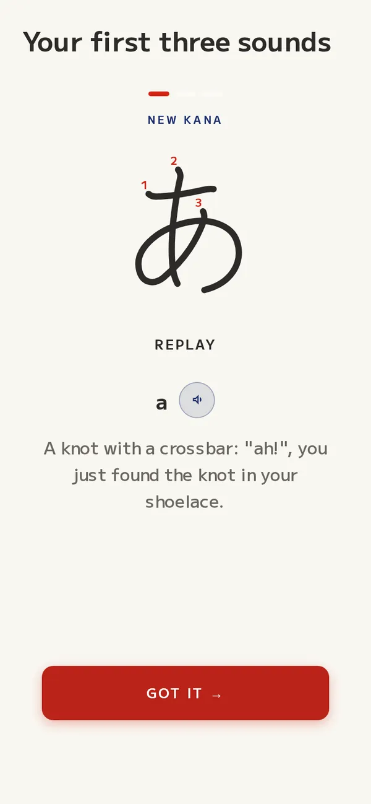
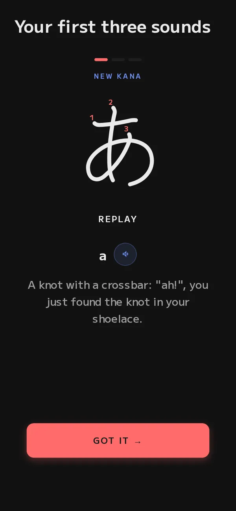
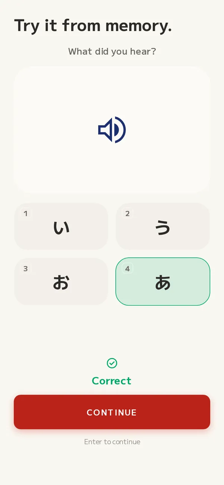
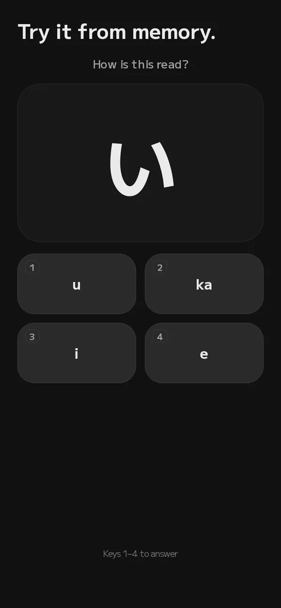
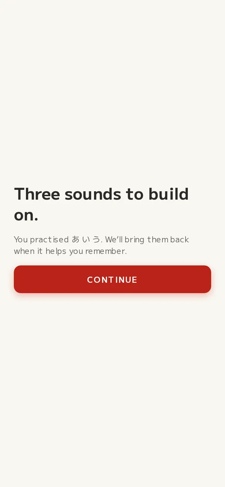
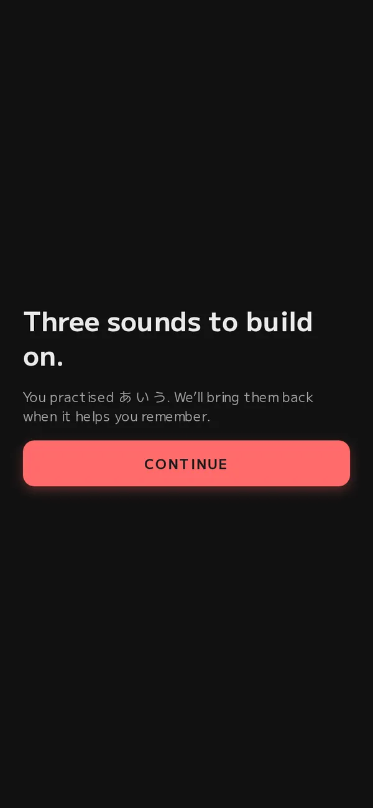

JLPT N5 is open. Free, no account needed.
Make Japanese impossible to forget.
The memory science of Anki, the daily habit of Duolingo, in a calm Japanese skin. Your first recall takes under a minute.




What fudami takes from each
-
Memory science, like Anki
FSRS schedules every kana, kanji and word for the moment just before you would forget it.
-
A daily habit, like Duolingo
Short sessions with a clear finish line and a streak to keep. No decks to build, no settings to tune.
-
Calm, like paper and ink
No ads, no leaderboards, no guilt trips. A quiet page you can open on a train at 6am.
How it works
From zero to your first recall in under a minute.
-
Meet three sounds
Each new kana comes with its strokes, its sound and a picture to hang it on. Already read kana? Test out instead.
-
Recall, don't reread
You pull each one back from memory, by sound and by sight. Retrieval is what makes it stick.
-


Come back when it helps
Smart reviews return just before you'd forget. Each session has a set size: finish it and you're done for the day. No backlog guilt.
An honest comparison
Where fudami fits.
Anki and Duolingo are both excellent at what they set out to do. Here is what is different, including where fudami is behind.
| Anki | Duolingo | fudami | |
|---|---|---|---|
| Scheduling | FSRS or SM-2, yours to configure | Its own practice system | FSRS, built in, nothing to configure |
| What you study | Decks you make or download | Duolingo's own course | A guided JLPT N5 path, from kana up |
| Daily habit | Up to you | Streaks, goals, leagues | A streak and a session goal, no leagues |
| Start | Install, then pick a deck | App or browser, account to save | Browser, no account |
| Where it's behind | Steep learning curve | Lighter on long-term memory | Young: N5 only, web only for now |
Based on each product's public features in November 2026. See pricing and who builds fudami.
Free dictionary
Look anything up in Jisho.
Words, readings, kanji and handwriting search, on jisho.fudami.net. No account, no ads.
Questions
Before you start.
Is fudami free?
Yes. The JLPT N5 path is free in your browser while fudami is in early access. If paid features come later, the pricing page will say so before you pay anything.
Do I need an account?
No. You can start as a guest: your progress is kept in this browser. Create an account when you want it to follow you to another device.
What can I learn today?
JLPT N5, starting from hiragana and katakana. N4 is being built next. New to the words? The glossary explains kana, kanji and the JLPT in plain words.
Is there a phone app?
fudami runs in the browser on phones and computers today. Native iOS and Android apps are planned: join the list to hear when they ship, or when N4 opens.
What is FSRS?
The Free Spaced Repetition Scheduler, an open algorithm that predicts when you are about to forget each item and schedules the review just before. More on FSRS.
Your first three sounds are waiting.
One minute, no account. あ, い, う.